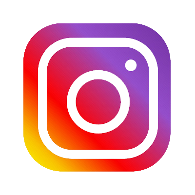

| Instagram | Features | Users | Reception | Images |
Instagram
"Instagram (commonly abbreviated to IG, Insta or the gram) is an American photo and video sharing social networking service created by Kevin Systrom and Mike Krieger. In April 2012, Facebook acquired the service
for approximately US$1 billion in cash and stock. The app allows users to upload media that can be edited with filters and organized by hashtags and geographical tagging. Posts can be shared publicly or with pre-
approved followers. Users can browse other users' content by tags and locations and view trending content. Users can like photos and follow other users to add their content to a personal feed.
Instagram was originally distinguished by only allowing content to be framed in a square (1:1) aspect ratio with 640 pixels to match the display width of the iPhone at the time. In 2015, these restrictions were eased with
an increase to 1080 pixels. The service also added messaging features, the ability to include multiple images or videos in a single post, and a 'stories' feature—similar to its main opposition Snapchat—which allows users
to post photos and videos to a sequential feed, with each post accessible by others for 24 hours each. As of January 2019, the Stories feature is used by 500 million users daily.
As of June 2021, the most followed person is Portuguese professional footballer Cristiano Ronaldo with over 300 million followers.
As of January 14, 2019, the most-liked photo on Instagram is a picture of an egg, posted by the account @world_record_egg, created with the sole purpose of surpassing the previous record of 18 million likes on a Kylie
Jenner post. The picture currently has over 55 million likes. The second most-liked photo is a wedding photo of Ariana Grande and her husband Dalton Gomez. Instagram became the 4th most downloaded mobile app of
the 2010s.
Features and tools
Hashtags
In January 2011, Instagram introduced hashtags to help users discover both photos and each other. Instagram encourages users to make tags both specific and relevant, rather than tagging generic words like "photo", to
make photographs stand out and to attract like-minded Instagram users.
Users on Instagram have created "trends" through hashtags. The trends deemed the most popular on the platform often highlight a specific day of the week to post the material on. Examples of popular trends include
#SelfieSunday, in which users post a photo of their faces on Sundays; #MotivationMonday, in which users post motivational photos on Mondays; #TransformationTuesday, in which users post photos highlighting
differences from the past to the present; #WomanCrushWednesday, in which users post photos of women they have a romantic interest in or view favorably, as well as its #ManCrushMonday counterpart centered on
men; and #ThrowbackThursday, in which users post a photo from their past, highlighting a particular moment.
In December 2017, Instagram began to allow users to follow hashtags, which display relevant highlights of the topic in their feeds.
Explore
In June 2012, Instagram introduced "Explore", a tab inside the app that displays popular photos, photos taken at nearby locations, and search. The tab was updated in June 2015 to feature trending tags and places, curated
content, and the ability to search for locations. In April 2016, Instagram added a "Videos You Might Like" channel to the tab, followed by an "Events" channel in August, featuring videos from concerts, sports games, and
other live events, followed by the addition of Instagram Stories in October. The tab was later expanded again in November 2016 after Instagram Live launched to display an algorithmically-curated page of the "best"
Instagram Live videos currently airing. In May 2017, Instagram once again updated the Explore tab to promote public Stories content from nearby places.
Photographic filters
Instagram offers a number of photographic filters that users can apply to their images. In February 2012, Instagram added a "Lux" filter, an effect that "lightens shadows, darkens highlights and increases contrast". In
December 2014, Slumber, Crema, Ludwig, Aden, and Perpetua were five new filters to be added to the Instagram filter family.
Video
Initially a purely photo-sharing service, Instagram incorporated 15-second video sharing in June 2013. The addition was seen by some in the technology media as Facebook's attempt at competing with the then-popular
video-sharing application Vine. In August 2015, Instagram added support for widescreen videos. In March 2016, Instagram increased the 15-second video limit to 60 seconds. Albums were introduced in February 2017,
which allow up to 10 minutes of video to be shared in one post.
IGTV
IGTV is a vertical video application launched by Instagram in June 2018. Basic functionality is also available within the Instagram app and website. IGTV allows uploads of up to 10 minutes in length with a file size of
up to 650 MB, with verified and popular users allowed to upload videos of up to 60 minutes in length with a file size of up to 5.4 GB. The app automatically begins playing videos as soon as it is launched, which CEO
Kevin Systrom contrasted to video hosts where one must first locate a video.
User characteristics and behavior
Users
Following the release in October, Instagram had one million registered users in December 2010. In June 2011, it announced that it had 5 million users, which increased to 10 million in September. This growth continued
to 30 million users in April 2012, 80 million in July 2012, 100 million in February 2013, 130 million in June 2013, 150 million in September 2013, 300 million in December 2014, 400 million in September 2015, 500
million in June 2016, 600 million in December 2016, 700 million in April 2017, and 800 million in September 2017.
In October 2016, Instagram Stories reached 100 million active users, two months after launch. This increased to 150 million in January 2017, 200 million in April, surpassing Snapchat's user growth, and 250 million
active users in June 2017.
In April 2017, Instagram Direct had 375 million monthly users.
In June 2011, Instagram passed 100 million photos uploaded to the service. This grew to 150 million in August 2011, and by June 2013, there were over 16 billion photos on the service. In October 2015, there existed
over 40 billion photos.
Reception
Awards
Instagram was the runner-up for "Best Mobile App" at the 2010 TechCrunch Crunchies in January 2011. In May 2011, Fast Company listed CEO Kevin Systrom at number 66 in "The 100 Most Creative People in Business in
2011". In June 2011, Inc. included co-founders Systrom and Krieger in its 2011 "30 Under 30" list.
Instagram won "Best Locally Made App" in the SF Weekly Web Awards in September 2011. 7x7 Magazine's September 2011 issue featured Systrom and Krieger on the cover of their "The Hot 20 2011" issue. In
December 2011, Apple Inc. named Instagram the "App of the Year" for 2011. In 2015, Instagram was named No. 1 by Mashable on its list of "The 100 best iPhone apps of all time," noting Instagram as "one of the most
influential social networks in the world." Instagram was listed among Time's "50 Best Android Applications for 2013" list.
Images


Source: https://en.wikipedia.org/wiki/Instagram